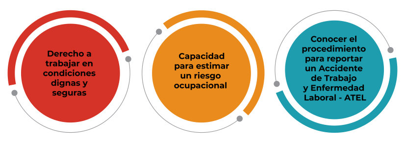
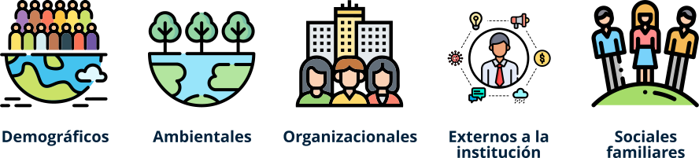

Introducción
Damos inicio al último recurso educativo de este curso de Salud Penitenciaria a través del cual se definen y desarrollan los elementos conceptuales, técnicos y metodológicos del Sistema de Seguridad y Salud en el Trabajo en contextos penitenciarios.
Este recurso se orienta a destacar temáticas contenidos e instrumentos que servirán de guía y agenda de trabajo a los servidores, funcionarios y personal que ejerce una profesión u ocupación en salud al interior de los establecimientos de reclusión del país. El objetivo de este material técnico y pedagógico es garantizar que los escenarios de trabajo donde es atendida la población privada de la libertad, sean ambientes seguros y protegidos a pesar de los contextos; que contribuyan, no solo al bienestar y la protección de la salud y la vida de los trabajadores sino también a espacios dignos para la prestación de servicios de salud a las personas privadas de la libertad.
1. Sistema de Seguridad y Salud en el Trabajo
Sistema de Gestión de Seguridad y Salud en el Trabajo, SGSST, como instrumento para la protección de la salud de los trabajadores
En esta primera parte establecemos los elementos conceptuales y técnicos del Sistema de Gestión de Seguridad y Salud en el Trabajo-SGSST aplicable al ámbito penitenciario, orientado específicamente hacia el personal que ejerce una profesión u ocupación en salud al interior de los establecimientos de reclusión del INPEC.
El objetivo es proveer de elementos conceptuales y técnicos a los trabajadores de la salud que ingresan a las instalaciones de los ERON a través de diferentes formas de relaciones laborales, para que reconozcan sus derechos de laborar en condiciones dignas que protejan su salud; a la vez tengan la capacidad de identificar riesgos de origen laboral que puedan afectar su salud; y finalmente, comprendan cómo realizar el reporte a su empleador y a la ARL, al momento de presentarse un accidente o una enfermedad laboral.

El gobierno nacional ha establecido que el empleador o contratante con el apoyo de su administradora de riesgos laborales, ARL, debe diseñar y desarrollar un Sistema de Gestión de Seguridad y Salud en el Trabajo-SGSST como la herramienta de mejora continua (PHVA) que permite identificar, evaluar e intervenir las condiciones de trabajo que pueden ser generadoras de los incidentes, enfermedades y accidentes, por causa o con ocasión del trabajo (Decreto 1072 de 2015 en el libro 2, parte 2, título 4, capítulo 6).
Los trabajadores de la salud que prestan servicios a la población privada de la libertad, PPL, al momento de ser vinculados laboralmente adquieren derechos constitucionalmente establecidos para que su salud y su vida sean protegidos como una obligación de su empleador o entidad contratante, cualquiera sea la forma contractual de su vinculación.
Los empleadores o entidades contratantes cumplen con esta obligación a través de dos instrumentos:
El aseguramiento del trabajador de la salud al subsistema de riesgos laborales del sistema general de seguridad social, mediante la afiliación a una administradora de riesgos laborales – ARL, desde el primer día de su relación contractual.
b.
La protección de la salud del trabajador ante alguna condición de riesgo ocupacional, a través del diseño y desarrollo del SGSST en su empresa.
Considerando que a los establecimientos de reclusión del orden Nacional - ERON del INPEC, específicamente a las Unidades Primarias de Atención Intramural, ingresan trabajadores que van a prestar servicios de salud a la población privada de la libertad –PPL, a través de diversas formas de vinculación laboral como trabajadores de planta; contratistas a través de órdenes de prestación de servicios; personas cuyos servicios se realizan bajo criterios de voluntariado y solidaridad; y los estudiantes en condición de prácticas en sus procesos de aprendizaje; existe en el sistema penitenciario dos instancias de responsabilidad para la protección de su salud, que son:
La primera instancia, a cargo del empleador, contratante o entidad a través de la cual se vinculan las personas del sector salud que ingresan a las Unidades Primarias de Atención Intramural.
b.
La segunda instancia, son las que debe realizar el INPEC y la USPEC como responsables que en los ERON y las Unidades Primarias de Atención Intramural, existan condiciones de trabajo dignas que no generen riesgos que conlleven a la ocurrencia de accidentes de trabajo o enfermedades profesionales.
Instrumentos de protección de la salud de los trabajadores a cargo de los empleadores, contratantes, instituciones de educación y entidades de voluntariado y solidaridad
Instrumentos de protección de la salud de los trabajadores a cargo del INPEC y USPEC
A partir de entender que son el INPEC y la USPEC las entidades responsables de la construcción el mantenimiento y el cuidado de las instalaciones de los ERON, y en particular de las Unidades Primarias de Atención Intramural, son ellas las responsables de prever y planificar que las condiciones de los sitios de trabajo a los que van a llegar los trabajadores de la salud, no contengan situaciones de riesgo que puedan ser generadoras de accidentes de trabajo y enfermedades laborales.
Esta falta de previsión en el diseño, la construcción o el mantenimiento de las áreas de trabajo pueden conllevar a la ocurrencia de caídas de muros, contactos eléctricos, inadecuada iluminación, concentración de vapores por problemas de ventilación, entre otros.
Asimismo, la falta de previsión del INPEC puede conllevar a la presencia de condiciones de trabajo que puedan generar riesgos al momento de la realización de los procedimientos de salud, relacionados con el manejo de equipos biomédicos, dispositivos y materiales que puedan contener productos químicos, generadores de vapores, humos, gases o material particulado que pueda afectar la salud de los trabajadores.
El desarrollo de procedimientos y protocolos para el control del riesgo biológico, incluyendo las instrucciones y la disposición de los residuos biosanitarios o biológicos que debe desarrollarse de manera coordinada en el marco de la aplicación del Plan Integral de Gestión Ambiental - PIGA, en coordinación con las entidades prestadores de los servicios de salud.
A continuación, se presentan algunas de las obligaciones de las Administradoras de Riesgos Laborales, considerando la importancia del cumplimiento de las obligaciones que la norma le ha establecido, como entidades aseguradoras que deben asesorar y acompañar a todas las entidades anteriormente mencionadas en la atención de la salud de los trabajadores:
01Capacitación sobre Seguridad y Salud en el Trabajo.
02Fomento de estilos de trabajo y de vida saludables, de acuerdo con los perfiles epidemiológicos.
03Formulación de la política y elaboración del plan anual de trabajo.
04Identificación de peligros, evaluación y valoración de los riesgos según la actividad económica.
05Definición de prioridades de intervención y medidas de control.
06Desarrollo de actividades de promoción y prevención.
07Conformación de la brigada de emergencias, COPASST y Comité de Convivencia Laboral.
08Formulación del plan de prevención, preparación y respuesta ante emergencias.
09Reporte e investigación de accidentes, incidentes y enfermedades laborales.
10Medición y evaluación de la gestión.
11Recomendaciones al plan de mejora conforme a la evaluación de los estándares mínimos.
2. Identificación de peligros y evaluación de riesgos
¿Cuáles son los peligros y riesgos presentes en las áreas de sanidad?
Los trabajadores de la salud se enfrentan a riesgos de accidentes y enfermedades relacionados con su ocupación. El estrés psíquico, el contacto con enfermedades transmisibles y la violencia son quizás los principales riesgos. Los trabajadores de los servicios de urgencia están sometidos a ellos, con mayor frecuencia que los de otras áreas.
Las mujeres representan casi el 80% de la fuerza laboral en el sector salud.
Los trabajadores de la salud se enfrentan a una gran variedad de riesgos en el trabajo, entre las cuales se encuentran lesiones por pinchazos de agujas, lesiones de la espalda, alergias al látex, violencia y estrés.
Las tasas de lesiones ocupacionales de los trabajadores de salud han aumentado en la última década. En comparación, la agricultura y la construcción, dos de las industrias más peligrosas.
La caracterización de peligros, evaluación y estimación de riesgos en un Sistema de Gestión de Seguridad y Salud en el Trabajo (SG-SST) deberán ser desarrollados por un dirigente ayudado del compromiso y la participación de todos los empleados de la organización, independientemente del nivel que tengan.
La identificación de peligros, la evaluación y la valoración de riesgos deben ser documentadas y actualizadas:
- Anualmente.
- Cada vez que suceda un accidente de trabajo mortal o un evento catastrófico en la organización.
Cuando se presenten cambios en los procesos, en las instalaciones en la maquinaria o en los equipos que se utilizan.
Gestión del riesgo en el sector salud
Este es un ejemplo de identificación del riesgo de los principales accidentes de origen biológico:
El empleador o entidad contratante del trabajador de la salud deberá adoptar una metodología para la identificación, evaluación, valoración y control de peligros, además de los riesgos que puedan darse en la organización.
La metodología deberá contemplar los siguientes aspectos:
- Todos los procesos
- Actividades rutinarias y no rutinarias
- Actividades internas o externas
- Maquinaria y equipos de trabajo
- Todos los centros de trabajo
- Todos los empleados, independiente de su forma de contratación o vinculación con la empresa.
- Medidas de prevención y control.
3. Riesgo psicosocial
Las condiciones de trabajo en los ERON
Los trabajadores de la salud se enfrentan a riesgos de accidentes y enfermedades relacionados con su ocupación. El estrés psíquico, el contacto con enfermedades transmisibles y la violencia son quizás los principales riesgos. Los trabajadores de los servicios de urgencia están sometidos a ellos, con mayor frecuencia que los de otras áreas.
La cárcel o las instalaciones de los ERON, como institución, es un escenario cerrado que conlleva riesgos inherentes al trabajo en estas instituciones adicionales a los propios de la actividad de la prestación de los servicios de salud, que afectan la salud mental de los trabajadores.
Las afecciones a la salud son de tipo afectiva, emocional y cognitiva, registradas a través de diversas e importantes investigaciones que han señalado que los funcionarios penitenciarios presentan mayores índices de estrés debido a la complejidad y exigencia del trabajo que desempeñan (Kenian & Malach-Pines, 2007).

La prestación de servicios de salud a personas en condiciones de pobreza, destierro o encerramiento, entre otras, como colectivos especialmente vulnerables, conlleva a la presencia del síndrome Bournot, establecido como enfermedad profesional.
La interacción con la PPL se centra en la problemática que estos tienen; problemas de salud, de drogadicción, familiares, sociales etc., todos ellos con una enorme carga emocional y cuya solución en la mayoría de los casos no está en mano de los profesionales que los atienden.

Se sostiene que a mayor edad y antigüedad, los niveles de estrés en el personal penitenciario son menores (Lindquist & Whitehead, 1986). Se describen causas como salarios mal remunerados; personal insuficiente con relación al número de PPL que se encuentra en incremento; los turnos laborales; peligrosidad en el entorno, catalogado como un agente agresor (Castle & Martin, 2006); la interacción con los reclusos que resultan ser estresantes por momentos.; entre otros.
De otra parte, existen los Factores de Riesgo Psicosociales positivos o protectores, se refieren a aquellas situaciones y factores que se configuran en agentes que benefician la salud, propician el bienestar del trabajador, provocan satisfacción personal y aumento en el cumplimiento de las metas. También están relacionados con el Eustrés, (Es la cantidad de estrés que produce un estado de alerta necesario para obtener un alto rendimiento físico y mental, permitiendo de igual forma un elevado nivel de productividad y creatividad).
Este tipo de estrés da lugar a una sensación de confianza, de control, de ser capaz de abordar y llevar a buen término unas tareas, unos retos y unas demandas concretas.
Glosario
Normatividad:se entiende por normatividad o normativa a las formas institucionales a través de las cuales el comportamiento es configurado socialmente.
Ley:regla o norma establecida por una autoridad superior para regular, de acuerdo con la justicia, algún aspecto de las relaciones sociales.
Decreto:resolución o decisión que toma una persona o un organismo con autoridad para ello.
Resoluciones administrativas:en este sentido, es una orden que pronuncia el responsable de un servicio público. Se trata de una norma cuyo alcance está limitado al contexto del servicio en cuestión y cuyo cumplimiento es obligatorio.
Material complementario
| Nombre del documento o material | Tipo de material | Enlace del recurso |
|---|---|---|
| Ley 65 de 1993 | Página web | Ver página |
| Resolución 3190 de 2013 | Página web | Ver página |
| Resolución 7302 de 2005 | Página web | Ver página |
| Decreto 2296 de 2014; Resoluciones 4005 de 2016 y 5512 de 2016 | Descargar | |
| El modelo de atención en salud para la población privada de la libertad, está regulado mediante la Resolución 5159 de 2015. | Descargar | |
| Rojas, Javier (2016). Modelo de Atención en Salud para la población privada de la libertad. | Video en Youtube | Ver video |
Referencias bibliográficas
Fiduprevisora. Contrato de Fiducia Mercantil No. 145 de 2019https://www.fiduprevisora.com.co/wp-content/uploads/2020/03/Anexo-No-7-CONCERTACI%C3%93N-MODALIDAD-DE-C%C3%81PITA.pdf
Decreto 1142 de 2016. Capítulo 11 del Título 1 de la Parte 2 del Libro 2 del Decreto 1069 de 2015, Decreto Único Reglamentario del Sector Justicia y del Derecho, y se adoptan otras disposicioneshttps://www.fiduprevisora.com.co/wp-content/uploads/2020/03/Anexo-No-7-CONCERTACI%C3%93N-MODALIDAD-DE-C%C3%81PITA.pdf
Decreto 2245 de 2015. Adición capítulo al decreto 1069 de 2015, Único reglamentario del sector Justicia y del derecho en lo relacionado con la prestación del servicio a las personas privadas de la libertad bajo vigilancia INPEChttps://www.minjusticia.gov.co/Portals/0/Ministerio/decreto%20unico/%23%20decretos/13.DECRETO%202245% 20DEL%2024%20DE%20NOVIEMBRE%20DE%202015.pdf
Consejo Nacional De Política Económica Y Social República De Colombia Departamento Nacional De Planeación. Documento CONPES 3828 del 19 de Mayo de 2015. Política penitenciaria y carcelaria Colombiahttp://www.politicacriminal.gov.co/Portals/0/documento/CONPES%20Pol%C3%ADtica% 20penitenciaria%20y%20carcelaria%202015.pdf
Fernández, R. (2005). Introducción al Sistema Penitenciario Españolhttps://docplayer.es/7900389-Introduccion-al-sistema-penitenciario-espanol-1-autor-rafael-fernandez-cubero.html
Ley 1709 de 2014. Se reforman algunos artículos de la Ley 65 de 1993, de la Ley 599 de 2000, de la Ley 55 de 1985 y se dictan otras disposicioneshttp://www.suin-juriscol.gov.co/viewDocument.asp?ruta=Leyes/1686959
USPEC. Manual técnico para la prestación del servicio de salud a la población privada de la libertad INPEC (2016)https://www.minsalud.gov.co/sites/rid/Lists/BibliotecaDigital/RIDE/INEC/IGUB/uspec-manual-tecnico-administrativo-servicio-salud.pdf
Resolución 5159 de 2015. “Por medio de la cual se adopta el Modelo de Atención en Salud para la población privada de la libertad bajo la custodia y vigilancia del Instituto Nacional Penitenciario y Carcelario – INPEC”. Bogotá, D.C., Ministerio de Salud y Protección Social. 30 de noviembre de 2015.
Sentencia T-035 de 2013. “Acción de tutela interpuesta por Germán Augusto Gómez Valdez contra el Juzgado Tercero de Ejecución de Penas y Medidas de Seguridad de Popayán y otros”. Bogotá, D.C., Magistrado Ponente: Jorge Iván Palacio Palacio. 28 de enero de 2013.
Fotografías y vectores tomados de https://www.shutterstock.com/ y https://www.freepik.es/
Licencia Creative Commons
CC BY-NC-SA
Ver licencia.